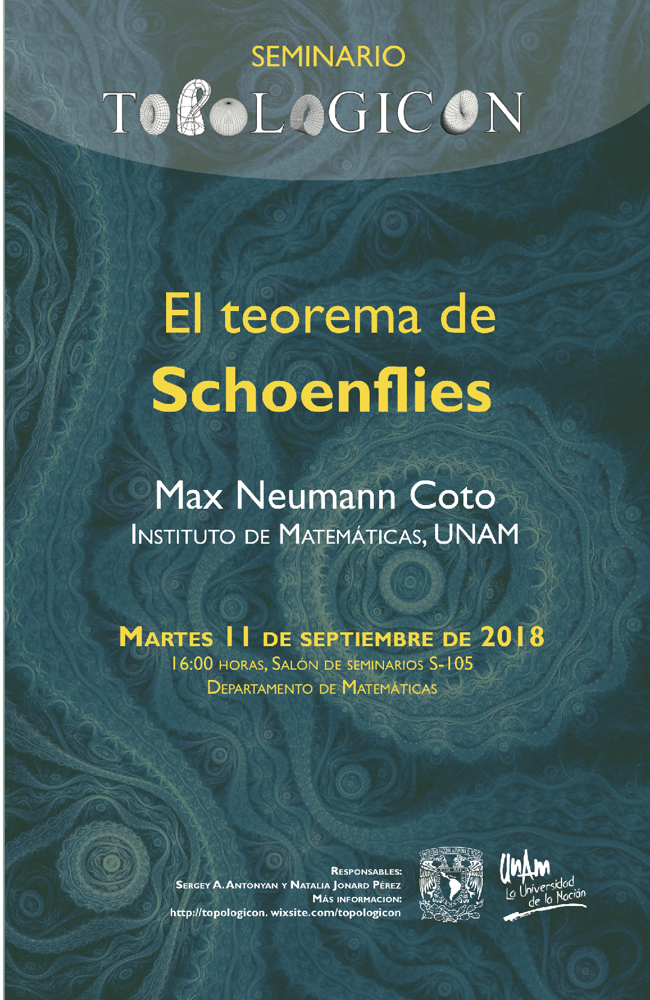

Les recordamos que la clase del día 11 de septiembre consistirá en asistir a la sesión del Seminario Topologicón para escuchar la plática: El Teorema de Schoenflies impartida por Max Neumann Coto (Instituto de Matemáticas-UNAM).
Resumen: El teorema de Schoenflies dice que cada círculo topológico en el plano es borde de un disco topológico. Es natural preguntarse si este teorema puede generalizarse a dimensiones más altas: ¿Será cierto que cada esfera topológica en el espacio es borde de una bola topológica? La respuesta sorprendente es que no: existen esferas salvajes. Alexander demostró que las esferas "lisas" si bordean bolas, y Brown mostró que esto es cierto en todas las dimensiones. Este es un resultado fundamental de la topología de variedades cuya demostración es muy bonita y usa técnicas de topología general bastante accesibles.
Lugar y fecha: Martes 11 de septiembre, 16:00 hrs.
Departamento de Matemáticas, Salón de seminarios S-105
Facultad de Ciencias.
